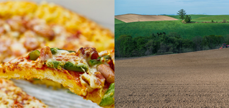
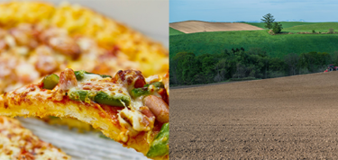

ABOUT
チーズアカデミーについて
チーズアカデミーは、チーズ職人養成学校です。
チーズの素晴らしさを、自給自足を通じて、できるだけ多くの人に知っていただきたい。
そして、食卓にはいつもチーズがあった、あの頃の当たり前をこの手で取り戻したい。
そんな思いから、チーズ職人養成学校「チーズアカデミーTOKYO」は歩みを始めています。
卒業後、チーズ自給自足のバックアップはもちろんのこと、
チーズ職人への就職・転職もサポートします。
 

COURSE
カリキュラムについて
未経験からでもスタートができるよう、カリキュラムは多くの専門家や
現役チーズ職人のアドバイスのもと、作られました。

本格的な農園を使った実地研修
チーズアカデミーでは、本格的な農園を使った実地研修を行うことができます。プロとして活躍するチーズ職人も使用するような、広大で環境も整った農園を余すところなく使い、卒業時には本格的なチーズを自分の力で作れる実践力の養成を目指します。

必要な知識もしっかりと取得
チーズ作りには、しっかりとした食に関する知識が欠かせません。チーズアカデミーでは、一流講師陣による、チーズ作りに必要ないろはを余すところなく学べます。チーズそのものでなく、栄養学全般を学ぶことも可能ですので、チーズ以外への展開も夢ではないでしょう。

卒業制作はテイスティング審査あり
チーズアカデミーでは最後の2ヶ月間で卒業制作を実施。卒業制作として、チーズ作りを実際に行います。卒業後、一般参加によるティスティング審査があるため、作り手の目線だけでなく、消費者の目線から、卒業制作作品としてのチーズを、しっかりと評価いただくことができます。
NEWS
ニュース
-

卒業生の活躍を紹介！
チーズアカデミー卒業生のコスゲさんによる チーズだけをふんだんに使用した話題のピザ屋 「Kosuge Pizza」が渋谷でオープンしました！
2021.10.10
-
卒業生の活躍を紹介！
チーズアカデミー卒業生のコスゲさんによる チーズだけをふんだんに使用した話題のピザ屋 「Kosuge Pizza」が渋谷でオープンしました！
2021.10.10
-
卒業生の活躍を紹介！
チーズアカデミー卒業生のコスゲさんによる チーズだけをふんだんに使用した話題のピザ屋 「Kosuge Pizza」が渋谷でオープンしました！
2021.10.10
ACCESS
会社情報
- 学校名
- チーズアカデミーTOKYO
- 事務所所在地
- 〒107-0061 東京都港区北青山3-5-6 青朋ビル2F
- dummy@cheese-academy.cheese
- TEL
- 01-2345-6789
CONTACT
説明会お申し込み・お問合せ
ぜひ1度、足を運んでみませんか。説明会は随時開催中。
その他、お問合せもお気軽にどうぞ。お待ちしております。
※チーズアカデミーは実際には存在しません。
間違っても問い合わせしないようお願いいたします。